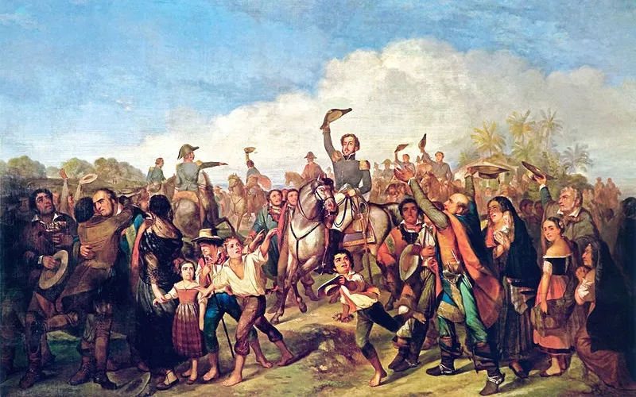

Galeria de Imagens
Explore a galeria de pinturas, gravuras e fotos relacionadas à independência do Brasil. [...]

A Independência do Brasil é um marco fundamental na construção da identidade nacional. Explore nossa plataforma e descubra a história por trás deste importante evento.
A independência do Brasil foi um processo histórico que culminou no dia 7 de setembro de 1822, quando D. Pedro I proclamou o famoso "Grito do Ipiranga". Contudo, esse evento foi o desfecho de um longo período de transformações sociais, políticas e econômicas que começaram a tomar forma a partir do final do século XVIII.
No contexto da Revolução Industrial e das ideias iluministas que circulavam pela Europa e pelas Américas, o Brasil, então uma colônia de Portugal, começou a sentir a pressão por mudanças. As restrições comerciais impostas pela coroa portuguesa e a crescente insatisfação com a exploração colonial geraram um clima de descontentamento entre os brasileiros. Em 1808, a Família Real portuguesa fugiu para o Brasil devido à invasão napoleônica, estabelecendo a corte em sua colônia e promovendo algumas reformas que modernizaram a administração e a economia do país.
Após o retorno de D. João VI a Portugal em 1821, a situação se complicou. D. Pedro, seu filho, ficou no Brasil e se viu pressionado tanto por colonos que desejavam mais autonomia quanto por Portugal, que queria restabelecer o controle absoluto sobre a colônia. A insatisfação popular cresceu, e manifestações em favor da independência começaram a surgir, culminando na histórica declaração de D. Pedro em 7 de setembro de 1822, às margens do riacho Ipiranga, onde ele exclamou: "Independência ou Morte!".
A proclamação da independência não foi o fim do conflito. O Brasil enfrentou uma série de batalhas para garantir sua soberania, com resistência de tropas leais a Portugal. A guerra pela independência se estendeu até 1825, quando o Tratado de Paz foi assinado, reconhecendo oficialmente a independência do Brasil por parte de Portugal.
As consequências da independência foram profundas e duradouras. O Brasil se tornou uma monarquia constitucional, com D. Pedro I como seu primeiro imperador. A independência permitiu ao Brasil adotar uma identidade própria, embora os desafios políticos e sociais continuassem, incluindo a luta pela abolição da escravatura e as tensões entre diferentes regiões do país.
Em suma, a independência do Brasil foi um processo complexo que refletiu as aspirações de um povo por liberdade e autogoverno, e que teve um impacto significativo na formação da nação brasileira como a conhecemos hoje.
D. Pedro I foi o primeiro Imperador do Brasil e figura central no processo de independência.
Conhecido como o "Patriarca da Independência", José Bonifácio foi um dos principais articuladores da emancipação do Brasil.
Esposa de D. Pedro I, Maria Leopoldina foi uma forte defensora da independência e teve grande influência nas decisões políticas.
Jornalista e político, Ledo foi um dos grandes defensores da independência e participou da articulação ideológica do movimento.
Religioso e revolucionário, Frei Caneca foi um dos principais nomes da Confederação do Equador, movimento republicano no Brasil.
Uma das mulheres mais influentes do período, foi próxima a D. Pedro I e atuou nos bastidores da política da época.
Explore os documentos históricos relacionados à Independência do Brasil, como a Carta de Independência e o Manifesto às Nações Amigas. Cada documento oferece uma visão única do processo que moldou o país.
A carta enviada por D. Pedro I ao rei de Portugal, declarando a separação do Brasil.
Ver DocumentoDocumento diplomático que justifica a independência perante outras nações.
Ver DocumentoTratado assinado com Portugal, reconhecendo oficialmente a independência do Brasil.
Ver DocumentoExplore a galeria de pinturas, gravuras e fotos relacionadas à independência do Brasil. [...]
Se você tem dúvidas, sugestões ou deseja mais informações, preencha o formulário abaixo ou entre em contato conosco através das redes sociais.